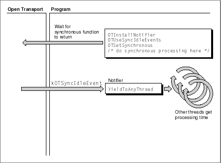
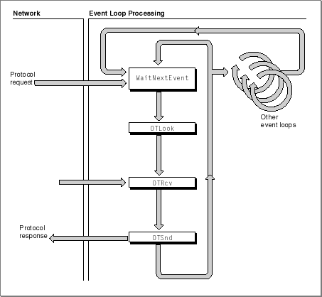
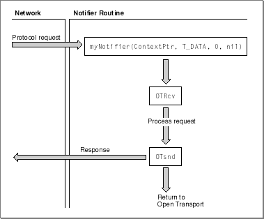

Legacy Document
Important: The information in this document is obsolete and should not be used for new development.
Important: The information in this document is obsolete and should not be used for new development.


Open Transport Programming Models
Designing a program that uses Open Transport involves finding an execution path that is simple to code but that does not degrade user experience nor endanger the robustness of your program. This section describes various strategies that you can use to structure code that calls Open Transport, focusing on the relative merits of the Open Transport notification mechanisms.The Mac OS Open Transport API is a superset of the industry standard X/Open Transport Interface (XTI) specification. Because the XTI standard originated in a preemptive multitasking environment, a task's blocking I/O requests did not degrade the system's overall responsiveness. In such an environment all calls can be made synchronously, which eases the task of coding and minimizes synchronization problems. The matter stands differently in the current Mac OS cooperative multitasking environment, in which it is each task's responsibility to provide other, concurrent tasks with access to the processor. In the Mac OS environment, calling a task synchronously, without ceding time to other processes, is regarded as very poor programming practice and can easily hang the machine or seriously degrade user experience. To solve this problem, Open Transport extends the XTI API to support asynchronous notification of I/O completion. Open Transport uses several types of events to notify your application that something has occurred that requires its immediate attention. An event might signal the arrival of data, a connection or disconnection request, or the completion of an asynchronous function. Your program can either poll for these events or it can install a notifier function that Open Transport will call when an event occurs.
There are three basic ways to structure Open Transport programs:
- Synchronous processing with threads
Using this method, you can call Open Transport functions synchronously. Open Transport sends your notifier the event
kOTSyncIdleEventwhenever a synchronous call is waiting to complete. In response, your notifier can call the functionYieldToAnyThread, which allows other concurrent processes to obtain processing time. This method offers the simplest programming model inasmuch as it avoids asynchronous processing. For more information, see "Using Synchronous Processing With Threads".
- Polling for events
Using this method, you can call the function
OTLookfrom your main event loop to poll for events such as the arrival of data, connection and disconnection requests, etc. The problem with this method is that theOTLookfunction does not return completion events. Thus, if you are calling a function asynchronously, you need to find some other way to determine whether the function has completed. For more information, see "Polling for Events".
- Using a notifier function to handle events
Using this method, you install a notifier function and call Open Transport functions asynchronously. Open Transport sends you any events that affect the specified endpoint, and you handle these from your notifier or from your main event loop. This method offers the best performance, but it increases program complexity and might give rise to synchronization problems. For more information, see "Using Asynchronous Processing With a Notifier".
Using Synchronous Processing With Threads
Figure 5-1 shows the key functions that your program must call to implement synchronous processing with threads. From within your program you must install a notification routine that handles the eventkOTSyncIdleEventby calling the functionYieldToAnyThread. The program must also call the functionOTUseSyncIdleEventsto let Open Transport know that it wants to receive events of the typekOTSyncIdleEvent.Figure 5-1 Synchronous processing with threads

When Open Transport is waiting for a synchronous function to complete, it sends the event
kOTSyncIdleEventto your notifier when it is safe for the notifier to call the functionYieldToAnyThread. This function eventually causes the Thread Manager to switch to a thread that callsWaitNextEvent, thus yielding time to other processes.
The only disadvantage of this method is that once you give time to other processes, you have no control over how long it takes for these processes to call
- Note
- You must be familiar with the Thread Manager in order to use the
YieldToAnyThreadfunction.
WaitNextEvent. So, while synchronous processing with threads might not be the method of choice for high performance servers, if your needs are more modest, you can enjoy the relative programming simplicity of this method. For a detailed example of a sample program using this model, see Listing 1-4 in "Getting Started With Open Transport."
- Note
- To get out of a threaded synchronous routine, use the function
OTCancelSynchronousCall.Polling for Events
Figure 5-2 shows the structure of a program that calls Open Transport functions asynchronously and uses theOTLookfunction to poll for incoming events.
By using the
OTLookfunction within its main event loop, an application does not need to idle while waiting for data to arrive. However, processing Open Transport events in an application's event loop can result in unpredictable packet processing delays. This is because the time between when your application receives a packet and when it responds depends on factors external to your application; it depends upon how other concurrent processes are using (or abusing) their access to the processor. Moreover, theOTLookfunction was written for the original XTI environment in which asynchronous processing played a very minor part. For this reason, the function does not return asynchronous completion events; as a result, if you are calling Open Transport functions asynchronously, you must use some other means to determine whether these have completed.Using Asynchronous Processing With a Notifier
Figure 5-3 shows the structure of an application that calls Open Transport functions asynchronously and uses a notification routine to process asynchronous and completion events. The chapter "Providers" gives detailed information about the use of notifiers.Figure 5-3 Asynchronous processing with a notifier

As shown in the figure, the advantage of using the notifier is that it is called by Open Transport whenever an event occurs, allowing you to respond immediately. Because Open Transport often calls your notifier at deferred task time, you can handle requests without the overhead of event loop processing.
To get the best performance and to minimize synchronization problems, you should attempt to respond to most events directly in the notifier. You should be able to perform the following tasks from your notifier:
By the same token, because notifiers do often execute at deferred task time, they are somewhat limited in the functions they can call. For more information, see "Deferred Task Level".
- accept and hand off connections
- receive and process all incoming data
- start asynchronous I/O operations; for example, call File Manager functions
- send network data
- tear down network connections
The following guidelines can help you use notifiers safely and effectively:
- Treat the notifier code path as a critical section. Assume you are locking the operating system from other tasks.
- Never call Open Transport at hardware interrupt time, except to schedule a deferred task or to call one of the functions (listed in Appendix C) that are safe to call at hardware interrupt time.
- Never make a synchronous Open Transport call from inside a notifier. Doing this will cause Open Transport to return the result
kOTStateChangeErrin order to prevent you from deadlocking.- Never make a synchronous File Manager or Device Manager call from inside a notifier. It might cause deadlock.
- Use completion events to gate endpoint action. For example, respond to a
T_OPENCOMPLETEevent by initiating a bind; or respond to the eventT_DISCONNECTCOMPLETEby calling theOTUnbindfunction. Making such use of completion events will prevent you from receiving the resultkOTStateChangeErrwhen you call a function before the endpoint is in a valid state.
- Note
- Note that Open Transport 68000-based applications can implement handler routines that use global variables without having to set up an A5 world.
Interrupt-Safe Functions
One reason it's difficult to process packets in a notifier is that when you do, you can't call the Mac OS Toolbox functions that move memory at deferred task time. To remedy this, Open Transport makes available a number of fast and interrupt-safe utility functions that you can use instead. These functions are documented in the chapter "Utilities Reference"."Memory Management From Notifiers
You can safely call the functionsOTAllocMemandOTFreeMemfrom your notifier. However, keep in mind that the memory allocated byOTAllocMemcomes from the application's memory pool, which, due to Memory Manager constraints, can only be replenished at system task time. Therefore, if you allocate memory at hardware interrupt level or deferred task level, be prepared to handle a failure as a result of a temporarily depleted memory pool.
Subtopics
- Using Synchronous Processing With Threads
- Polling for Events
- Using Asynchronous Processing With a Notifier
- Interrupt-Safe Functions
- Memory Management From Notifiers